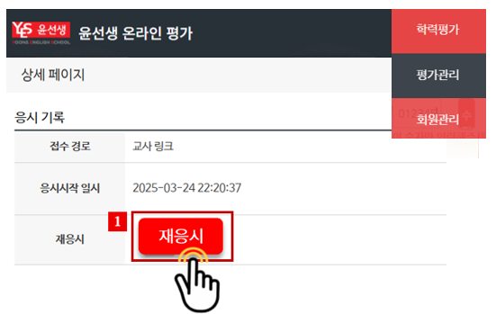
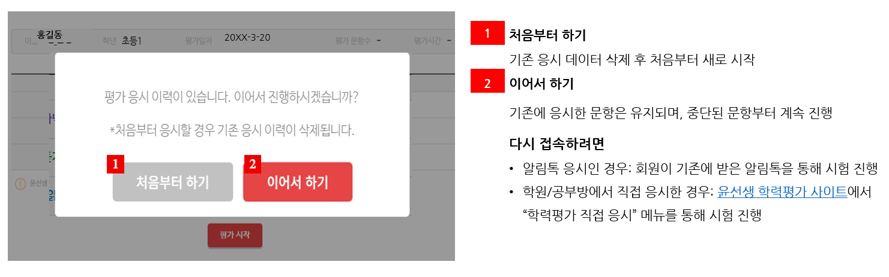

학력평가 VOC 고객센터 응대 가이드
학력평가 기간 중 발생하는 VOC는 아래 응대 프로세스에 따라 처리해 주세요. 😊
🗓️ 제11회 윤선생 학력평가 일정
① 사전 접수 기간: 26년 8월 18일(화) ~ 8월 31일(월)
② 시험 기간: 26년 9월 1일(화) ~ 9월 8일(화)
③ 결과 발표: 26년 9월 15일(화)
🔐 윤선생 학력평가 관리자 사이트 (고객센터 계정)
VOC 발생 시 고객센터에서 직접 처리할 수 있도록 별도 관리자 계정을 전달드립니다.
- ID: 별도문의
- PW: 별도문의
📘 주요 문의 유형별 표준 응대 가이드
🔄 문의 유형 1: ”응시 기록을 삭제해 주세요.“
CASE 1️⃣ 이미 시험을 완료한 경우
📢 고객센터 담당자 처리:
- 관리자 사이트 접속
- [학력평가] → [회원 관리] 에서 해당 학생 검색
- [재응시] 버튼 클릭하여 응시 기록 삭제
.png){kind=link}

- 📢 선생님께 다음과 같이 안내해 주세요.
"응시 기록 삭제 처리 완료되었습니다. 이제 회원이 기존에 시험을 보던 경로로 다시 접속하여 재응시해 주시면 됩니다. “- 알림톡으로 응시한 경우: 회원이 기존에 받은 알림톡을 통해 시험 재진행
CASE 2️⃣ 시험 도중 비정상 종료된 경우 (인터넷 끊김 / 실수로 종료)
- 📢 선생님께 다음과 같이 안내해 주세요.
"시험 진행 중 비정상 종료된 경우에는, 기존에 접속하셨던 경로로 다시 들어가시면 됩니다.
재접속 시 팝업창에서 '처음부터 하기' 또는 '이어서 하기'가 표시되며, 원하시는 방법을 선택해 진행해 주세요. ”
{kind=link}

🔄 문의 유형 2: “학년을 잘못 등록했어요.”
CASE 1️⃣ 이미 시험을 완료한 경우
📢 고객센터 담당자 처리:
- 관리자 사이트 접속
- [학력평가]→[회원관리]에서 해당 학생을 검색
- [재응시] 버튼 클릭하여 응시 기록 삭제
- 동일 화면에서 [접수취소] 버튼 클릭
- 📢 선생님께 다음과 같이 안내해 주세요:
"해당 학생의 응시 기록과 접수 정보를 삭제해 드렸습니다. 윤스넷에서 학년 정보를 올바르게 수정하신 후, 학력평가 사이트에서 다시 시험을 접수하여 응시해 주세요.”
CASE 2️⃣ 아직 시험을 보지 않은 경우 (선생님 직접 처리)
📢 선생님께 다음과 같이 안내해 주세요:
“시험을 아직 응시 전이시면, 선생님께서 접수취소→ 학년 수정 → 재접수 순서로 직접 처리하실 수 있습니다. 아래 순서대로 진행해 주세요.”
- 윤선생 학력평가 사이트에 접속해 주세요. (https://leveltest.yoons.com/)
- [학력평가] →[회원 학력평가 관리]에서 해당 학생 검색 후, [접수취소] 버튼을 클릭해 주세요.

- 윤스넷에서 해당 학생의 학년 정보를 올바르게 수정해 주세요.
- 학력평가 사이트에서 ‘학력평가 접수’ 버튼을 통해 다시 접수 후 응시해 주세요.

📊 문의 유형 3: “리포트의 일부 데이터가 보이지 않아요.”
※ 8월 12일 오전 리포트 업데이트 이후 발생한 경우 아래 내용을 우선 안내해 주세요.
🔎 증상
교사사이트에서 학력평가 리포트 접속 시 일부 데이터가 표시되지 않음.
💡 원인
리포트 업데이트 이전의 화면 정보가 브라우저에 임시 저장(캐시)되어 있는 경우 발생할 수 있음.
🛠️ 조치 방법
① PC – Chrome
- 리포트 화면에서 키보드의 Ctrl + Shift + R을 동시에 눌러 주세요.
- 화면을 새로 불러온 후 리포트를 다시 확인합니다.
② 태블릿(갤럭시탭·iPad) – Chrome
- Chrome의 ⋮ 또는 …(더보기) 선택
- 인터넷 사용 기록 삭제 선택
- 필요한 경우 옵션 더보기를 선택하고, 기간을 전체 기간으로 설정
- 캐시된 이미지 및 파일만 선택하여 삭제
- 교사사이트에 다시 접속하여 리포트 확인
※ 방문 기록, 쿠키 및 사이트 데이터, 저장된 비밀번호 등은 선택하지 않아도 됩니다.
📢 고객 안내 예시
“리포트 업데이트 이전 정보가 브라우저에 남아 있어 일시적으로 내용이 보이지 않을 수 있습니다.
PC에서는 리포트 화면에서 Ctrl + Shift + R을 눌러 주시고, 태블릿에서는 Chrome의 캐시된 이미지 및 파일을 삭제한 후 다시 접속해 주세요.”
⚠️ 참고: 응시 기록 삭제 기능인 [재응시]는 점수 향상을 위한 오남용을 방지를 위해 관리자 메뉴에서만 제공됨)
📢 담당자: 상품연구팀 정현
02-2225-5826